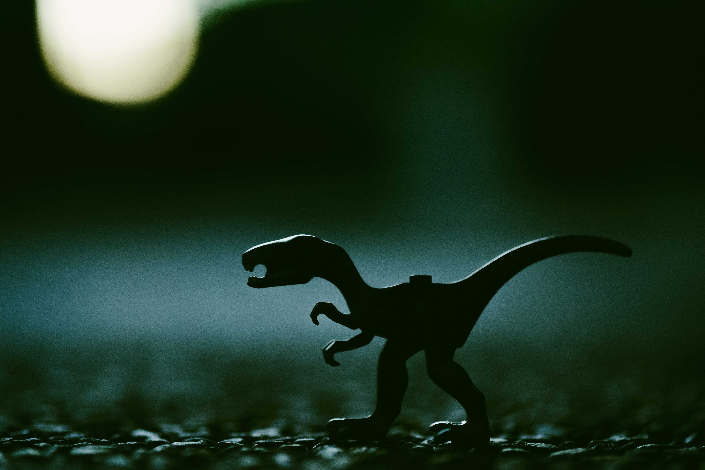
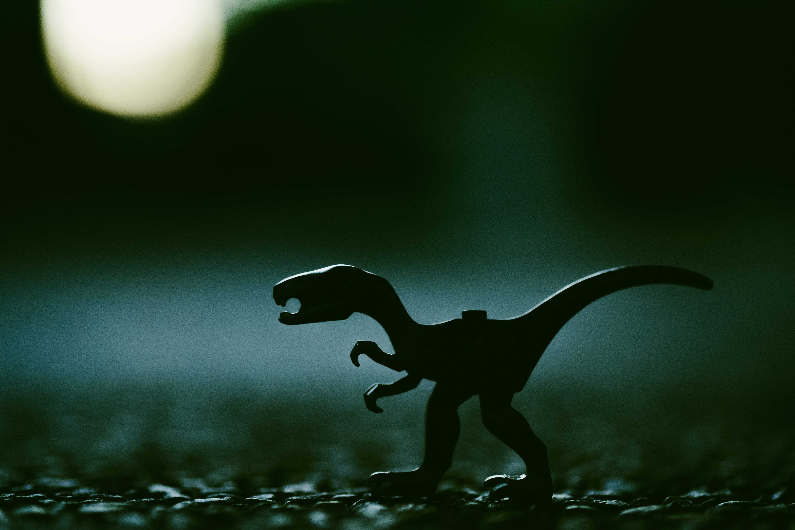
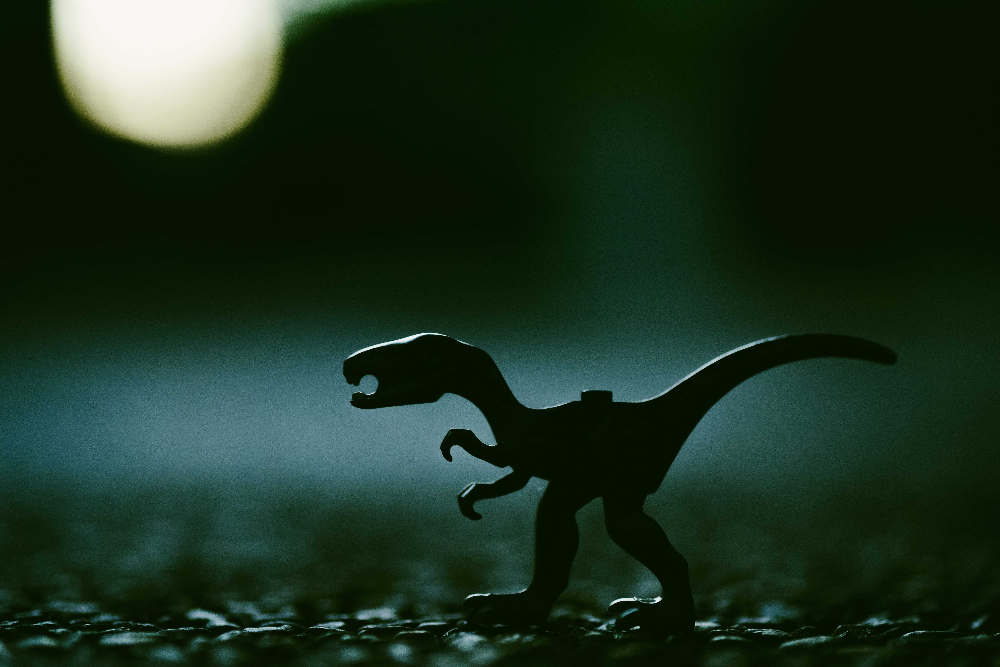

Los dinosaurios cambian de aspecto con cada nuevo descubrimiento Tradicionalmente, los científicos creían que las aves provenían de reptiles no estrechamente relacionados con los dinosaurios. Pero poco a poco, investigación tras investigación y hallazgo tras hallazgo, se ha descubierto que las aves son los descendientes de un grupo particular de dinosaurios.
Hasta hace aproximadamente cinco años, pocos paleontólogos se atrevían a esbozar la figura de un dinosaurio con plumas. Más bien se tenía la idea de que eran las escamas o alguna especie de piel dura lo que recubría sus cuerpos. Sin embargo, y a pesar de que será difícil que sepamos a ciencia cierta cómo eran estos magníficos animales, se sabe que muchos de ellos (y había cientos y cientos de especies de dinosaurios distintas) tenían plumas por una u otra razón.
Evolución
Adaptación
Evolución
